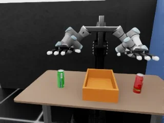
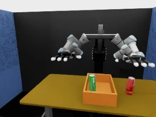
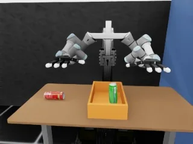
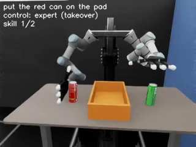
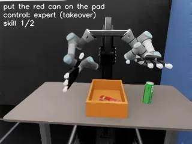
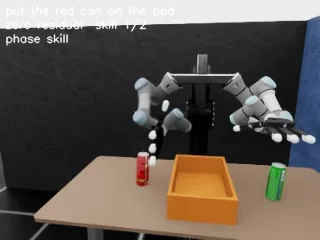
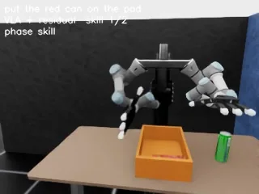

Personal project개인 프로젝트/2026.10/Simulation
VLM planner + SmolVLALanguage-instructed bimanual manipulation in Isaac LabIsaac Lab 양팔 로봇의 자연어 지시 수행
The same two-arm robot, now driven by language. A fine-tuned VLM reads the scene and the instruction and picks the next skill; SmolVLA turns that skill into motion for both arms. When grasping turned out to be the bottleneck, I fixed it with data: takeover DAgger, then Residual RL successes distilled back into the VLA.같은 양팔 로봇을 자연어 지시로 움직이는 프로젝트. Fine-tuning한 VLM이 장면과 지시문을 보고 다음 skill을 고르고, SmolVLA가 그 skill을 두 팔의 동작으로 바꿈. 병목이 Grasp로 드러난 뒤에는 Takeover DAgger와 Residual RL 성공 Trajectory를 VLA에 Distillation해 데이터로 해결
One episode, closed loop. The blue labels are planner calls; after each skill the arms return home and the planner looks again.한 에피소드, 폐루프. 파란 라벨은 planner 호출, skill마다 팔이 홈으로 돌아오면 planner가 다시 봄
01
System구조
Instruction
"Put the green can on the pad first, then the red can."
VLM planner
Qwen3-VL-4B
4-bit QLoRA fine-tuning on 21,216 samples from 1,632 scenes × 13 instruction types1,632 장면 × 13 지시 유형에서 만든 21,216 샘플로 4-bit QLoRA Fine-tuning
Answers the next skill:다음 skill을 답함:
VLA executor
SmolVLA 450M
Input: the skill as text ("put the green can on the pad"), the camera image and the joint state of both arms입력: skill 문장("put the green can on the pad"), 카메라 영상, 두 팔의 관절 상태
Trained on 1,200 scripted demos (210k frames)Scripted demo 1,200개(210k frames)로 학습
Output: 44-D action chunk, 50 steps출력: 44-D Action chunk, 50 steps
Robot
UR3 × 2 + Allegro Hand × 2
Per arm: 6 arm + 16 finger joints팔마다: 팔 6 + 손가락 16관절
After each skill the arms return home and the planner looks again.skill이 끝날 때마다 팔이 홈으로 돌아오고 planner가 다시 봄
02
PlannerPlanner
The planner has to read the scene and the instruction together: the same words can need different answers depending on where the cans are.Planner는 장면과 지시문을 함께 읽어야 함. 같은 지시라도 캔이 어디 있느냐에 따라 답이 달라짐

"Leave the red can where it is and put the other can on the pad."
answer green

"Put the green can on the pad first, then the red can."
answer red

"Put both cans on the pad."
answer stop
Phrasing seen in training학습에 쓴 표현
Unseen phrasing학습에 없던 표현
In closed loop폐루프에서
242 / 243planner calls that matched the correct next skill정답 다음 skill과 일치한 planner 호출03
Results결과
Task success rate by stage단계별 Task success rate QLoRA VLM planner, 2 seeds
Same budget, different data같은 학습량, 다른 데이터
percentage points, sign test on episodes paired by instruction단위 %p, 같은 지시문 episode끼리 Sign test
SmolVLA only vs final modelSmolVLA 단독 대 최종 모델
by task typeTask 종류별
Final model: VLM planner + SmolVLA distilled with Residual RL (157 episodes)최종 모델 = VLM planner + Residual RL로 Distillation한 SmolVLA (157 episodes)
- SmolVLA onlySmolVLA 단독
- No VLM planner. One SmolVLA performs the whole task from the full instruction, with the same demos and settings (50k steps). 160 episodes.VLM planner 없이 SmolVLA 하나가 전체 지시문으로 Task 전체를 수행. 같은 Demo, 같은 설정 50k steps. 160 episodes
- Control 1
- The 50k VLA trained 8k more steps on the original demos only. Same budget as DAgger, without takeover data.50k VLA를 기존 Demo만으로 8k steps 더 학습. DAgger와 학습량은 같고 Takeover 데이터만 없음
- Control 2
- The DAgger model trained 8k more steps on demos and DAgger data. Same budget, without the Residual RL successes.DAgger 최종 모델을 Demo와 DAgger 데이터로 8k steps 더 학습. Residual RL 성공 Trajectory만 없음
QLoRA VLM planner, 2 seeds, about 156 episodes in total.QLoRA VLM planner, seed 2개, 약 156 episodes
04
Fixing grasp failures with dataGrasp 실패를 데이터로 고친 두 단계
Fine-tuning the planner did not move task success past 41.0%. Both fixes feed the VLA new data; neither changes the VLA with RL directly.Planner Fine-tuning만으로는 Task success rate가 41.0%에서 움직이지 않았음. 두 단계 모두 VLA에 새 데이터를 주는 방식이고, RL로 VLA를 직접 바꾸지 않음


Step 1
Takeover DAggerTakeover DAgger
- The VLA approaches the can for 0.7 to 2.1 s, then a scripted teacher re-plans from that state and finishesVLA가 0.7~2.1초 캔에 접근한 뒤, Scripted teacher가 그 상태에서 다시 계획해 마무리
- The teacher succeeded in 1,200 of 1,220; only the teacher part is saved, so the VLA learns to recover from its own mistakesTeacher 성공 1,200 / 1,220, Teacher 구간만 저장해 VLA가 자기 실수에서 회복하는 법을 학습
- Retrained from the 50k VLA on demos and corrections, 8k steps50k VLA에서 Demo와 교정 데이터로 8k steps 재학습


Step 2
Residual RL, then distillationResidual RL 뒤 Distillation
- SmolVLA frozen; a small residual policy trained with PPO adds up to 0.06 rad on the 6 active arm joints and sees the privileged can stateSmolVLA는 고정, PPO로 학습한 작은 Residual policy가 활성 팔 관절 6개에 최대 0.06 rad를 더함(캔 상태는 Privileged)
- One skill, 400 trials: 50.1% to 89.3% (24 envs, 417 updates)skill 하나 400회: 50.1%에서 89.3%로(환경 24개, 417 updates)
- 1,404 successful trajectories, labeled with what was executed, distilled into the VLA, which keeps image and joint state as its only inputs성공 Trajectory 1,404개(실행된 명령을 라벨로)를 VLA에 Distillation, VLA 입력은 영상과 관절 상태 그대로
05
Problem solving: finding the bottleneck문제 해결: 병목 찾기
Symptom현상
After fine-tuning the VLM planner, task success stayed at 41.0%.VLM planner를 Fine-tuning한 뒤에도 Task success rate가 41.0%에 머묾
Analysis분석
An oracle planner gave the same 42.9%, and planner decisions were right in 242 of 243 calls. The bottleneck was grasping: cans were knocked over.Oracle planner를 줘도 42.9%로 같고, Planner 결정도 243번 중 242번 정답. 병목은 Grasp(캔 넘어뜨림)
Fix조치
Takeover DAgger with a scripted teacher, then distillation of Residual RL successes on top of the frozen VLA.Scripted teacher가 넘겨받는 Takeover DAgger, 이어서 Frozen VLA 위 Residual RL의 성공 Trajectory를 VLA에 Distillation
Result결과
41.0% to 68.6% to 83.4%, above the same-budget controls (45.5%, 71.8%).41.0%에서 68.6%, 83.4%로. 같은 학습량 Control(45.5%, 71.8%)보다 높음
06
Scope and figures범위와 상세 그림
Scope범위
All numbers come from Isaac Lab simulation.모든 수치는 Isaac Lab Simulation 결과Fine-tuned VLM planner, about 156 episodes over 2 seeds. RL never changes the VLA weights. The privileged can state is used only by the simulation teacher.Fine-tuning한 VLM planner, seed 2개 약 156 episodes. RL은 VLA weight를 바꾸지 않음. Privileged 캔 상태는 Simulation teacher만 사용
Click to enlarge눌러서 크게 보기
System, planner examples and one closed-loop episode계층 구조, Planner 예시, 폐루프 한 에피소드
Click to enlarge눌러서 크게 보기
The two data fixes in detail두 교정 단계 상세